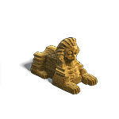

Получено: файл; исходный URL. Оригинальные байты, полученные по ссылке; идентичность архиву не подтверждена.
Сфинкс
Мой Мир; публикация 15.07.2011; редакция неизвестна- Тип
- Постройки
- Версия и дата
- Мой Мир; публикация 15.07.2011; редакция неизвестна
Данные по источнику · Мой Мир · публикация 15.07.2011; редакция неизвестна
Предварительно: историческая статья, требует сверки. Требуется сверка.


Данные по источнику · браузерная версия; платформа не установлена · дата редакции списка не установлена
Предварительно: Прочитан список. Имена файлов пиктограмм приводятся как есть: они не гарантируют идентификацию материала. Alt-атрибуты источника содержат ошибки. Отдельная статья и дата не проверены.. Требуется сверка.
- Сведения из списка, включая имена файлов пиктограмм
- Описание: Стадии строительства: [рисунок: Sfinks.png] Доступен на 45 уровне Купить за: 2 000 000 Монет Опыт: 2300(1000+150+ 450+700) 1. 40 Белый мрамор + 30 Чёрный мрамор +300 Камни 2. 20 Блоки + 10 Золотая пыль + 10 Золиан 3. 10 Бумага + 30 Костяная нога + 5 Чернила Производит: 5 Кирпичи = 15 Цемент + 3 Огонь
Данные по источнику · браузерная игра; платформа страницы не уточнена · 11.01.2014 — публикация; редакция неизвестна
Предварительно: Прочитана конкретная строка; старые сведения, у источника встречаются опечатки. Возможны заимствования, независимость от других сайтов не доказана.. Требуется сверка.
Данные по источнику · историческая браузерная игра, площадка не указана · 05.05.2012 — дата публикации; дата редакции неизвестна
Предварительно: Сопоставлено по единственному точному названию; различные версии или одноимённые объекты могут различаться. Названия файлов и alt пиктограмм сохранены как подписи, не заменяют проверенную расшифровку; изображения и цены требуют ручной сверки. Независимость от zombi-ferma.ru и других сайтов не установлена.. Требуется сверка.
- Текст и пиктограммы источника
- [изображение: m_sphincs.png] Доступен на 45 уровне Купить за: 2 000 000 Монет Опыт: 2300(1000+150+ 450+700) 1. 40 Белый мрамор + 30 Чёрный мрамор +300 Камни 2. 20 Блоки + 10 Золотая пыль + 10 Золиан 3. 10 Бумага + 30 Костяная нога + 5 Чернила Производит: 5 Кирпичи = 15 Цемент + 3 Огонь
Связанные сущности
нет проверенных связей — требуется сверка.